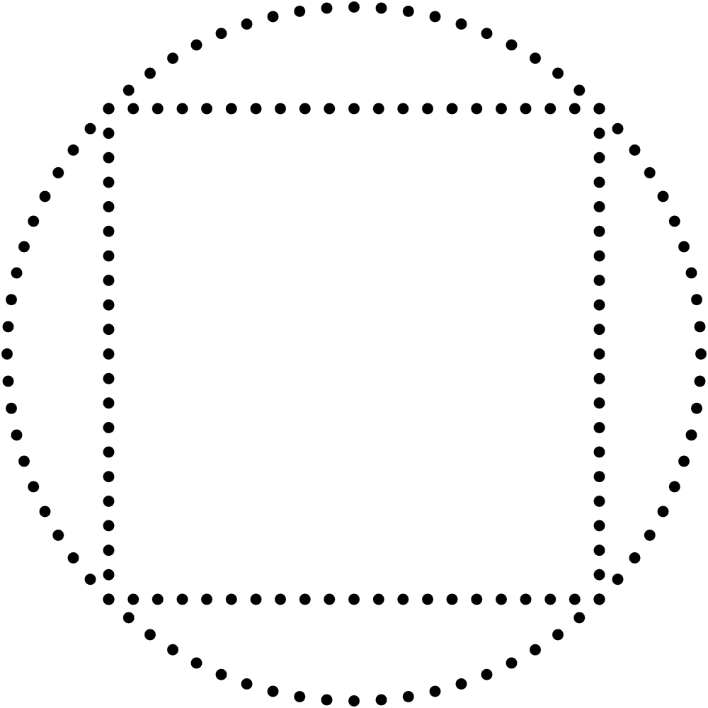
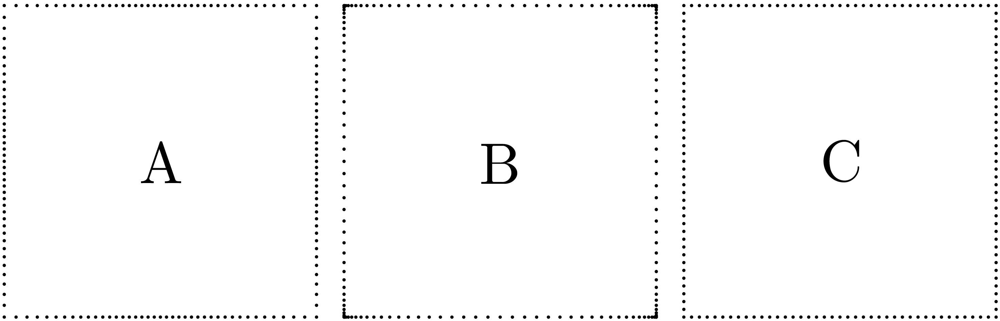
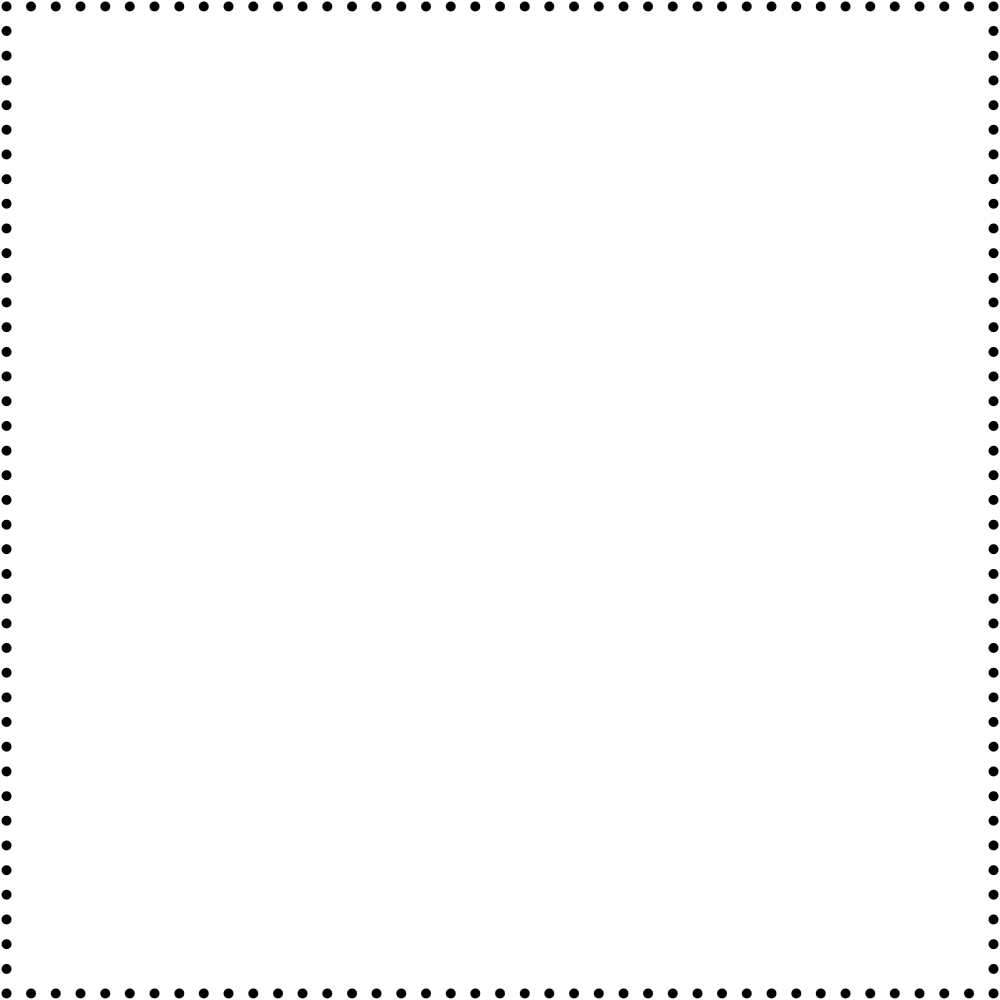
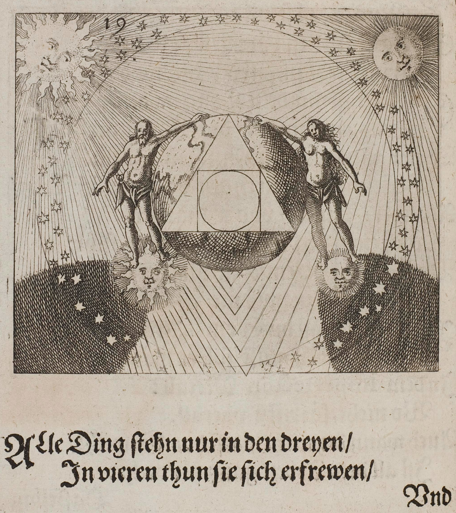
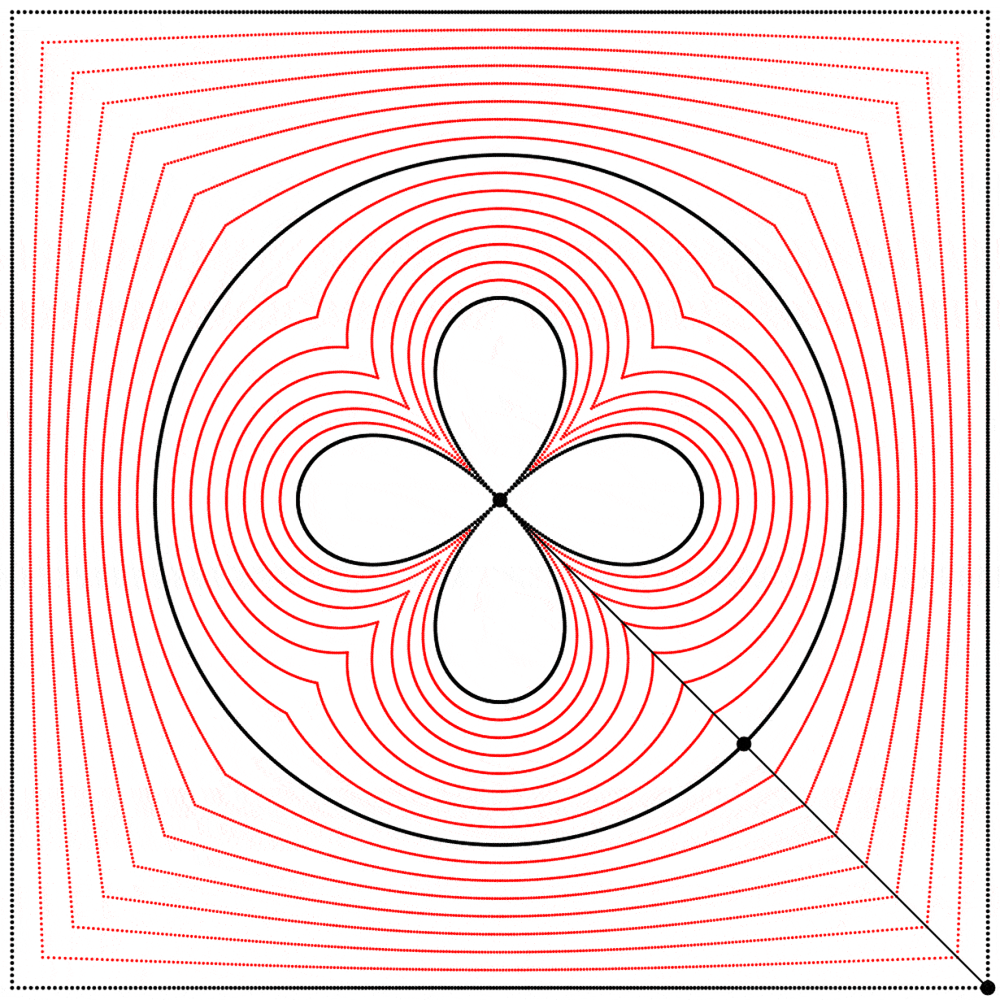
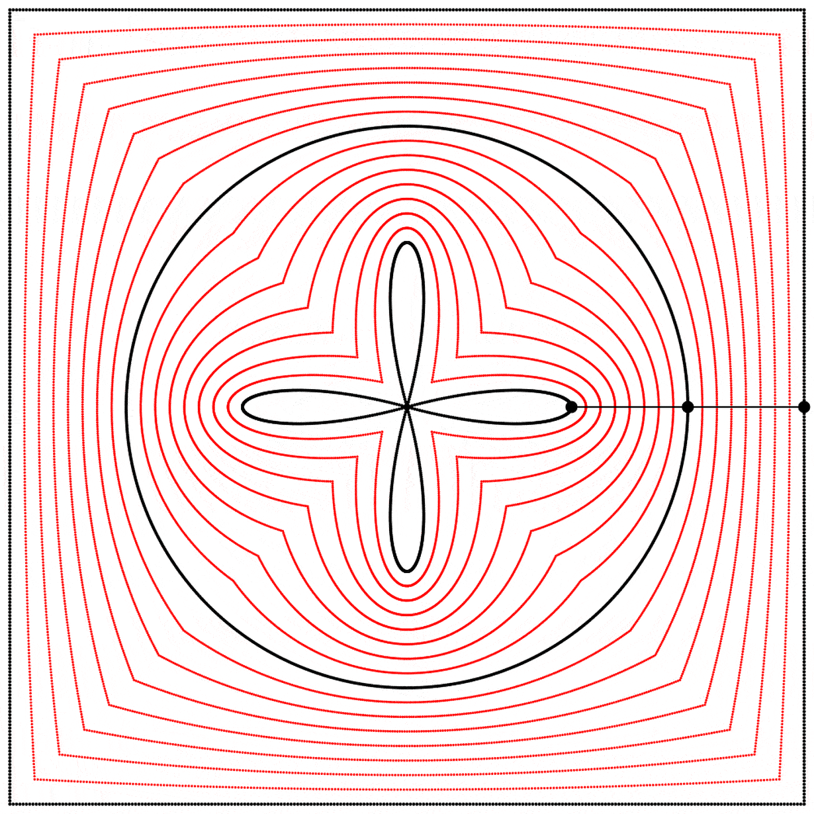
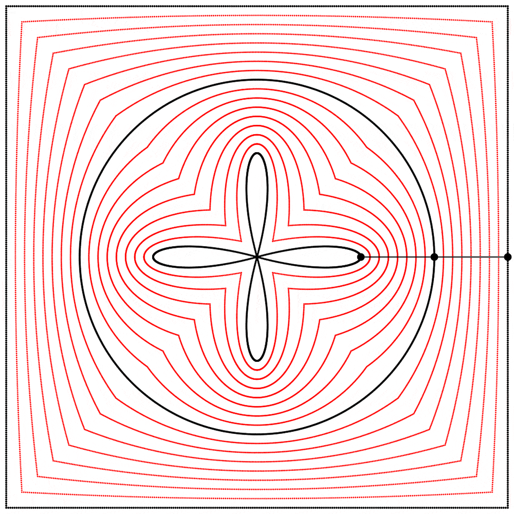

Squares, circles, and clovers
ver the last few years I’ve often drawn squares using 4 lines made out of dots, and recently I decided it was time to find a more elegant solution. I wanted a simple parametric equation that would draw the whole square in one fell swoop. I searched online and found many different solutions, none of which fit all my criteria. I first considered this equation, which I’ll call solution A. It’s a polar equation for a regular n-gon. So if n=4, we expectedly obtain a square.
And then I considered this equation, which I’ll call solution B. It’s based on the Lamé curve.
These solutions are great but they both have the disadvantage of creating lines from sequences of dots that are unevenly distributed along the square. The effect is a bit subtle with solution A and more visible in solution B. I needed another solution.
A square that behaves like a circle
I knew I wanted an equation for a square that would be as similar to a unit circle as possible, because I often draw squares and circles that are spatially connected together, and the familiar way to draw a unit circle with sin and cos is perfect and elegant.
In short, I wanted that:

So I first sketched out on paper the exact curves that I wanted.

Then I used a graphing application (the free Grapher that ships with macOS) and wrote this function via simple trial and error.

Mystical union of the square and the circle
The symbolic connections between the square and the circle have been on my mind since I read C. G. Jung’s Psychology and Alchemy. The book treats in detail the notion of squaring the circle: “the squaring of the circle was a problem that greatly exercised medieval minds. It is a symbol of the opus alchymicum, Simply put, the opus alchymicum is the ideal work that an alchemist aims to accomplish. It can be the transformation of substances or a personal transformation like the acquisition of wisdom. since it breaks down the original chaotic unity into the four elements and then combines them again in a higher unity. Unity is represented by a circle and the four elements by a square.” Collected Works of C.G. Jung, Vol 12, Psychology and Alchemy, page 124.
To illustrate the squaring of the circle, the book reproduces this engraving from Herbrandt Jamsthaler’s Viatorium Spagyricum (1625). Image source here.

- — “All things do live in the three /
But in the four they merry be. /”
Alchemical geometry at home
With my parametric square equation at hand I started to play around with the unions of squares and circles. My first idea (the most obvious one) was to make linear interpolations between them.
Below, when the interpolation is at 0 we get a square, and at 1 we get a circle. Between 0 and 1, we get a gradual melding of both.

Seeing this made me wonder what would happen if the interpolation kept going beyond 1. What would it look like at 2? The result surprised and delighted me: we get a four-leaf clover. I repeated the experiment with equations A, B, and C, and I added animated dots and lines to show that the circle always stands exactly halfway between the square and the clover.

 

Each clover is quite different, based solely on how the square is drawn. The squares look identical if they’re drawn with enough dots, but they still behave quite differently.
Seeing those clovers made me go back to one of my favourite websites, L’encyclopédie des formes mathématiques remarquables (The Encyclopedia of Remarkable Mathematical Shapes). It has a very good page (in English) on the quatrefoil curve.
Phase offset
What if we change the phase relation between the square and the circle? Instead of drawing the two shapes in sync like we did above, we can start drawing them at different points along their paths (in other words, at different points on their period). Below, on the left, the two shapes are drawn starting at the same point on their paths, and on the right, the phase of the square is shifted by half of the period, so π was added to the phase (the whole period being 2π).
I then linearly interpolated 3 times, at points {0.25,0.5,0.75}, between the square at 0 and the circle at 1, and again repeated the experiment with equations {A,B,C}.
Finally, we obtain different shapes when the scale relation between the square and the circle is changed.

Conclusion
 n what journeys will these beautiful parametric equations and this squaring of the circle bring us next? Will these clovers urge us to go wander around some gothic ruins? In any case, I’m already enchanted by this first foray. If you enjoyed this article, I invite you to support me on
Patreon. Thank you very much for reading!
n what journeys will these beautiful parametric equations and this squaring of the circle bring us next? Will these clovers urge us to go wander around some gothic ruins? In any case, I’m already enchanted by this first foray. If you enjoyed this article, I invite you to support me on
Patreon. Thank you very much for reading!
{kind=link}